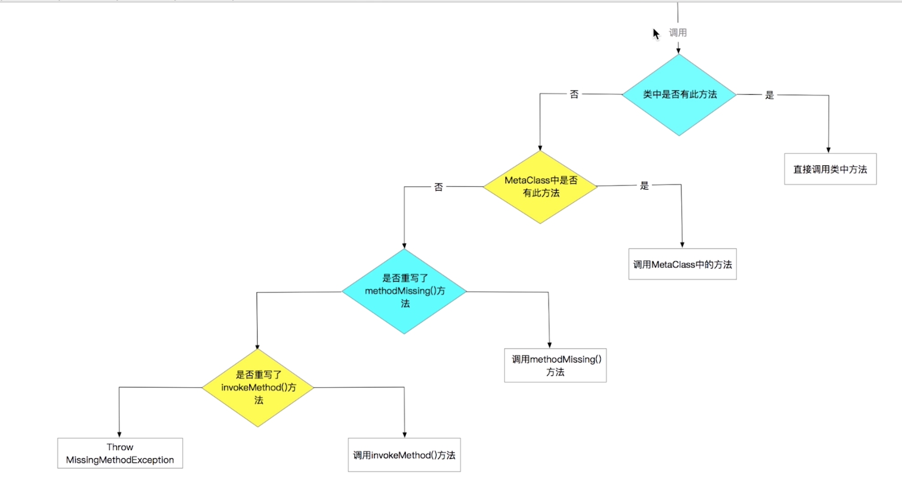

//全局注入方法ExpandoMetaClass怎么跟groovy对象联系的?
//元编程里的methodMissing是哪里继承的，为什么所有类都可以写这个方法
1.类、接口等的定义和使用
1.1 类
定义
class Person{
String name
Integer age
//def表明返回的是object类型
def increaseAge(Integer years){
this.age += years
}
}
- groovy中默认都是public类型，包括类、方法、变量等
- 创建的类都继承GroovyObject接口，默认实现get/set方法（对应于getProperty/setProperty）等
使用
//不需要构造方法，没设置值则为默认值
def person = new Person(name: 'krido',age: 18)
println "name is ${person.name},age is ${person.age}"
//无论是直接.还是调用get/set最终都是调用get/set
println "name is ${person.getName()},age is ${person.getAge()}"

1.2 接口
定义
//默认public
interface Action {
void eat()
void drink()
void play()
}
Groovy接口不允许定义非public的方法
使用
与Java一样
1.3 Trait
定义
trait DefaultAction {
abstract void eat()
void play(){
println 'i can play'
}
}
与接口/抽象类相类似，区别是方法须有默认实现，不提供默认实现需加上abstract关键字
使用
与接口一样
2.元编程
元编程就是编写的代码它所执行的时期，比如解释执行的JS，编译执行的Java，运行执行的Java反射。这节介绍Groovy运行执行的代码，Runtime。

执行未定义的方法
def person = new Person(name: 'krido',age: 18)
person.cry()

实现invokeMethod方法（位于GroovyObject）
//一个方法找不到时，调用它代替
//方法名，方法参数
def invokeMethod(String name, Object args) {
return "The method is ${name} and params is ${args}"
}

实现methodMissing方法
def methodMissing(String name, Object args){
return "The method ${name} is missing"
}

2.1 metaClass（位于DefaultGroovyMethods中，GroovyObject中有getMetaClass()、setMetaClass()，使用时.相当于get/set）
动态的添加属性和方法
为类动态添加属性
Person.metaClass.sex = 'male'
def person = new Person(name: 'krido',age: 18)
println person.sex
person.sex = 'female'
println person.sex

为类动态添加方法
Person.metaClass.sex = 'male'
Person.metaClass.sexUppercase = { -> sex.toUpperCase()}
def person = new Person(name: 'krido',age: 18)
println person.sexUppercase()

为类动态添加静态属性或方法
Person.metaClass.static.createPerson = {
String name,int age -> new Person(name: name,age: age)
}
Person person1 = Person.createPerson('mayo',18)
println person1.name + ' and ' + person1.age

运行时的意义
为final类提供新方法或者做框架的时候
全局注入属性和方法
使所有的脚本都可使用添加的属性或方法,ExpandoMetaClass.enableGlobally()
入口类
class Entry {
static void main(String[] args) {
println '应用程序正在启动。。。'
ApplicationManager.init()
println '应用程序初始化完成'
def person = PersonManager.createPerson('krido',18)
println person.name + " " + person.age
}
}
模拟应用管理类
class ApplicationManager {
static void init(){
ExpandoMetaClass.enableGlobally()
Person.metaClass.static.createPerson = {
String name,int age ->
new Person(name: name,age: age)
}
}
}
Person的管理类
class PersonManager {
static Person createPerson(String name,int age){
return Person.createPerson(name,age)
}
}